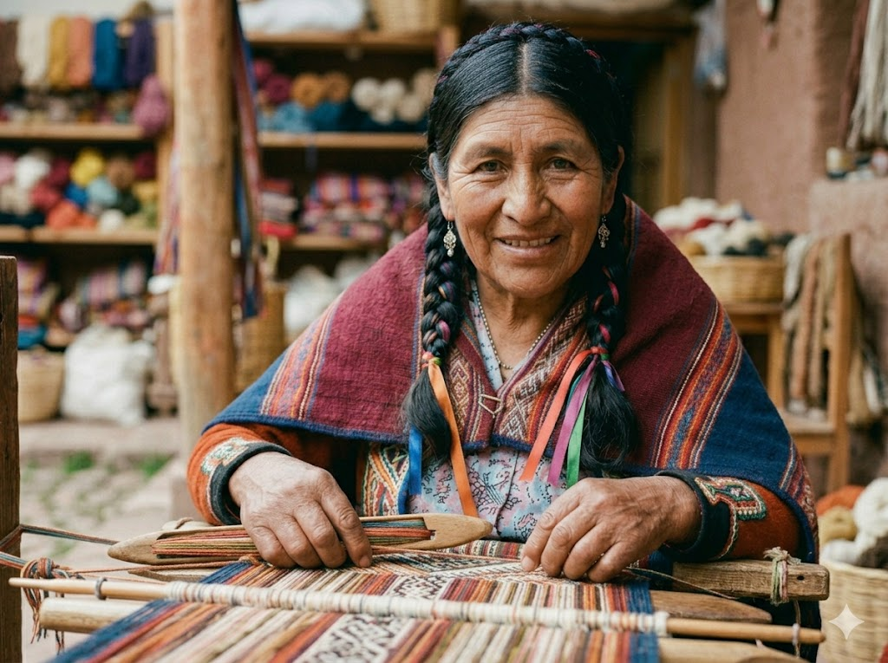
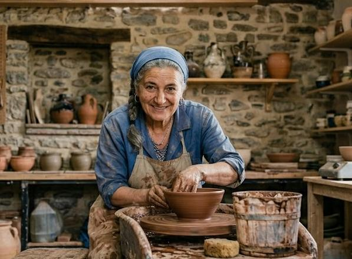
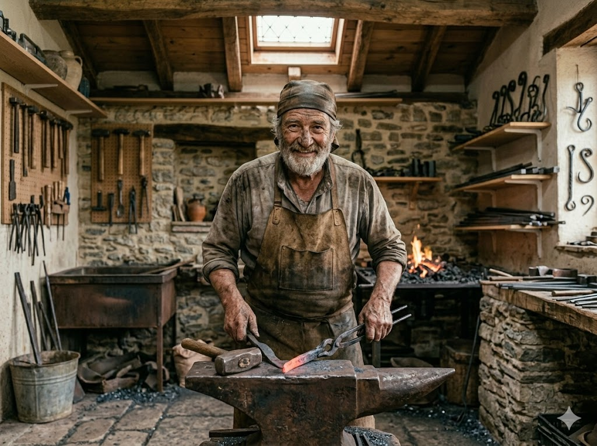
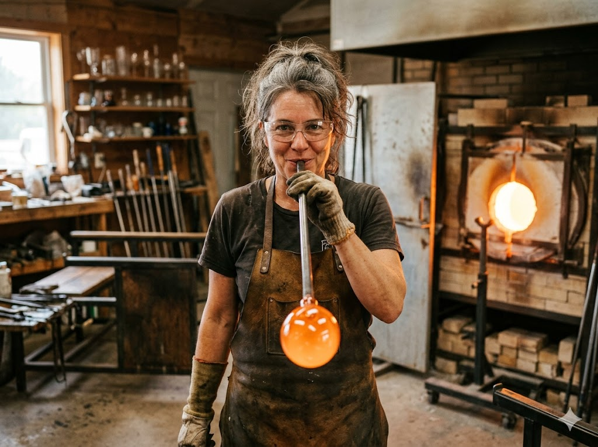
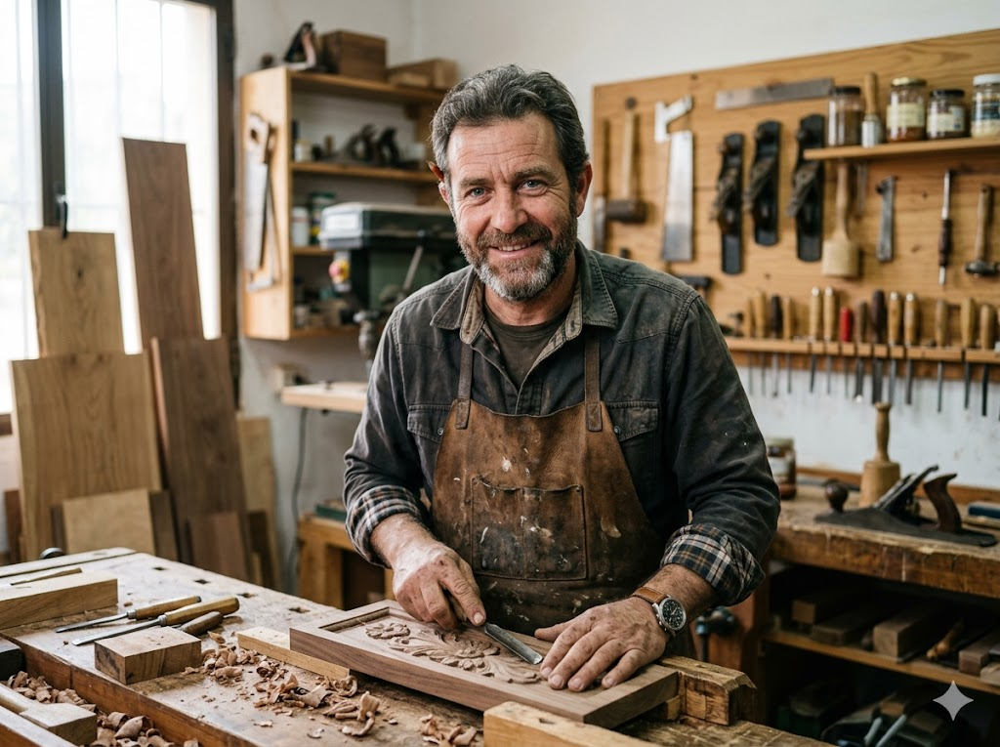

Ponentes de las jornadas

Sofía Reyes
Tejedora
Combina técnicas de tejido ancestrales con diseños modernos minimalistas. Especializada en lana de alpaca.
Lucas Navarro
Tejedor
Rescata el uso del telar de bajo lizo y tintes naturales extraídos de plantas autóctonas de la península ibérica.

Elena Villar
Alfarera
Especialista en esmaltes de alta temperatura y técnicas ancestrales orientales aplicadas al diseño contemporáneo.

Miguel Herranz
Herrero Forjador
Domina la forja al rojo vivo. Sus obras van desde herramientas especializadas hasta elementos arquitectónicos.

Marta Ferrer
Sopladora de vidrio
Con más de 20 años de experiencia, Marta fusiona el soplado tradicional con esculturas de iluminación moderna.

Carlos Mendoza
Ebanista
Maestro en ensamblajes tradicionales sin clavos ni tornillos. Trabaja exclusivamente con maderas recuperadas locales.